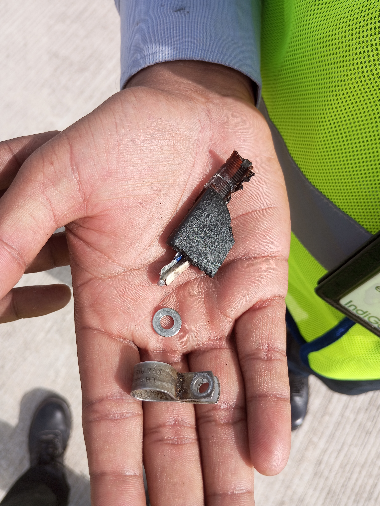
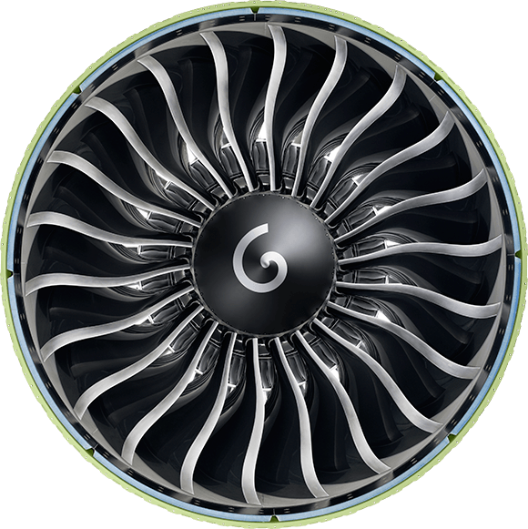

Foreign Object Debris (FOD) includes anything that shouldn't be on the ramp—stones, plastic, wrappers, tools, or even paper. These seemingly harmless items can cause serious damage when sucked into an aircraft engine. Always perform FOD checks during three key times:
Pre-arrivalPre-departurePost-departure
Everyone on the ramp is responsible for keeping the area clean. If you see something that doesn’t belong, remove it and place it in the designated FOD bin.

20. Biohazard Bin Usage at Airside
At airside, staff using the toilet cart must follow strict hygiene protocols to keep the environment safe. Specifically, All used disposable gloves and masks must be securely discarded in the biohazard bin to prevent contamination and maintain safety at airside .
This ensures contaminated PPE does not pose a risk to others. Remember, only biohazard waste like gloves and masks should go into the bin—never regular trash.
Always check that the biohazard bin is properly closed after disposal. If it’s full or damaged, report it immediately to maintain safety standards.
21. Jet Ingest vs Jet Blast
Jet ingest happens at the front of an active engine—it pulls in air and anything nearby, including people or objects. Jet blast occurs at the rear, where high-speed exhaust can knock over people or equipment. Maintain a minimum safe distance of 5.79 meters from the front and 60 meters from the rear of an active engine. Always respect these danger zones to stay safe.

22. Safe Time to Approach the Aircraft
Never approach an aircraft until all safety conditions are met: engines must be off, ACB (Aircraft Communication Beacon) lights turned off, chocks properly placed, and the engineer signals clearance. ACBs are located on the top and bottom of the fuselage for Airbus aircraft and at the top of the tail and bottom of the fuselage for ATRs. Rushing in before these indicators can lead to severe injury.
23. Cone and Chocks Placement: A320, A321, ATR
Cones and chocks are essential for securing aircraft on the ramp. For the A320 and A321, use 11 cones and 8 chocks under normal weather; increase to 12 chocks in high wind (above 25 knots), and remove cones. The ATR requires 10 cones and 6 chocks, which remain unchanged even in high wind. These safety tools prevent movement and ensure safety during ground operations.
Aircraft Type
Number of Cones
Chocks (Normal)
Chocks (High Wind)
Airbus A320
11
8
12
Airbus A321
Same as A320
Same as A320
Same as A320
ATR
10
6
6
24. Windchart
A windchart is an essential tool used at airside to monitor wind direction and speed in real time. This information helps ensure safe aircraft operations, especially during takeoff and landing.The wind chart is a quick-reference guide that helps determine operational safety based on wind speed. As wind speeds increase, so do the safety measures. For example, at 25-39 knots, secure loose items. At 40 knots and above, start tying down equipment. At 60 knots, certain operations must stop for safety. Always follow the chart—safety first, no exceptions.
Always check the windchart during these critical times: pre-arrival, pre-departure, and during taxiing.
Accurate wind data allows the ground crew and pilots to make informed decisions and maintain safety standards. If you notice any discrepancies or malfunctions with the windchart, report it immediately.
25. Know Your Aircraft: A320, A321, and ATR
Understanding aircraft differences is key to safe and efficient ramp operations. The A320 carries up to 186 Customers with 4 doors and 3 cargo holds. The A321 is larger, handling up to 232 Customers with 6 doors and 5 compartments. The ATR is smaller, with propellers instead of jet engines, seating 78 Customers and featuring unique door and cargo configurations. ACB light placements also vary—Airbus aircraft have them on the top and bottom of the fuselage, while ATRs have one on the tail and one on the belly.
Feature
A320
A321
ATR
Passenger Capacity
180 / 186
222 / 232
78
Lavatories
3
3
1
Doors
4 (L1, L2, R1, R2)
6 (L1, L3, L4, R1, R3, R4)
1
Cargo Holds
3 (Fwd, Aft, Bulk)
3 (Fwd, Aft, Bulk)
2 (Fwd, Rear)
Compartments
4 (1, 3, 4, 5)
5 (1, 2, 3, 4, 5)
4 (FWD R, FWD L, Rear Fwd, Rear Aft)
ACB Light Position
Top and Bottom of Fuselage
Top and Bottom of Fuselage
Top of Tail, Bottom of Fuselage
26. Three Door Operation: A320 vs A321
Door operations differ between the A320 and A321. The A320 uses L1, L2, and R1 doors. The longer A321 uses L1, L4, and R1 to allow smoother passenger flow. Knowing these configurations helps ensure quick, safe loading and unloading.
27. Hotel Mode in ATR
"Hotel Mode" in ATR aircraft means the aircraft powers its systems using its own engine on Starboard Side(Engine no: 2), while the propeller remains feathered and is held stationary using the propeller brake. This allows the aircraft to run lights, avionics, and air conditioning independently. Unlike GPU use, which involves external power, Hotel Mode is internal. Ramp personnel must remain cautious, as systems are live and the exhaust from engine 2 on starboard side area remains hot.
28. Load Distribution Message (LDM)
The Load Distribution Message (LDM) ensures aircraft balance by detailing the distribution of customers, cargo, and baggage. Proper balance is critical to safe flight operations. The LDM helps prevent issues like tail-heavy or nose-heavy conditions. Always refer to the LDM before finalizing any loading procedures.
29. Load Instruction Report (LIR)
The Load Instruction Report (LIR) specifies how and where to load cargo, mail, and baggage. It is divided into three columns: Arrival Load (what the aircraft arrives with), Planned Loading (what should be loaded), and Final Loading (what was actually loaded). Strictly follow the LIR to maintain balance and prevent loading errors.
30. Handling HUM (Human Remains)
HUM stands for Human Remains. These must be treated with dignity and respect. On Airbus aircraft, HUM is placed in the bulk hold (Compartment 5) with the head facing the nose of the aircraft to accommodate flight angles. Always secure with two straps and follow label instructions. Never place a HUM upside down or ignore orientation markings.
Note: In ATR aircraft, the transport of Human Remains (HUM) is not accepted.
31. Safety Management System (SMS)
The Safety Management System (SMS) is your go-to resource for identifying hazards and reporting safety concerns. A hazard is anything with the potential to cause harm—such as a broken light or equipment left out of place. Incidents are near misses, while accidents involve actual injury or damage. Prompt reporting through the SMS form or digital platforms like 6E Breez helps maintain a safe environment for all.
Hazard: Any condition that poses a risk—like a broken stairwell light that could lead to a fall.
Incident: A near miss—such as slipping on a wet floor but regaining balance in time.
Accident: An actual event resulting in harm—like tripping over loose equipment and getting injured.
Stay alert and report hazards as soon as you see them using the SMS form or platforms like 6E Breez. Quick action prevents harm and keeps everyone secure.You also have the option to fill it up.
32. Disability Awareness
Disability isn’t just visible. It includes a wide range of conditions—from mobility issues to mental health challenges. Understanding types like visual impairment, autism, PTSD, or diabetes builds empathy. The key is respect and support. Never assume someone's ability based on appearance. Attitude and awareness are as important as your uniform—wear them daily.
33. Types of Boarding Pass
Web Check-in (online)
Kiosk (self-service)
DigiYatra (biometric)
Counter Issued (staff will print at check-in counter)
Manual (used during system failures)
Each type serves the same goal—getting Customers on board. No matter the format, always double-check details like name, flight number, and gate to avoid mix-ups. Kindly note, certain non-metros will only allow Printed boarding pass at SHA(Security hold area).
34. Types of Wheelchairs
Different Customers need different wheelchairs. WCHC, WCHR, and Ostrich wheelchairs each serve unique needs. The correct type is indicated in the SSR section of the boarding pass. Matching the right wheelchair ensures safety and comfort for customers. Always check before you roll.
35. Priority Service Helpdesk (PSHD)
When a customer leaves upset, don’t ignore it. Stay calm, inform your Manager on Duty, and then report to PSHD. Provide the following details:
Customer’s name
PNR
Nature of issue
Any service recovery actions taken
This follow-up ensures continued care, even after the customer walks away. PSHD helps turn frustration into satisfaction.
Training Complete – Final Challenge Awaits!
You've completed all training modules! Now it’s time to test your knowledge. Head back to the homepage and take Quizzes 2 and 3. This is your final step—go show what you’ve learned!